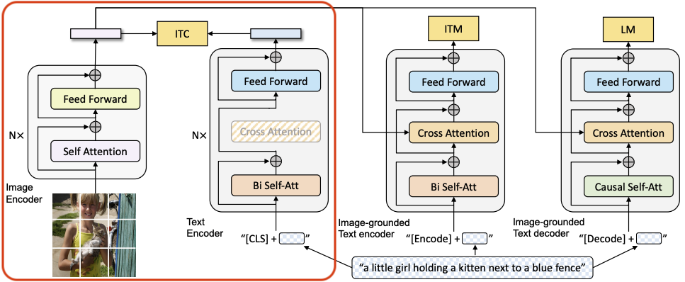
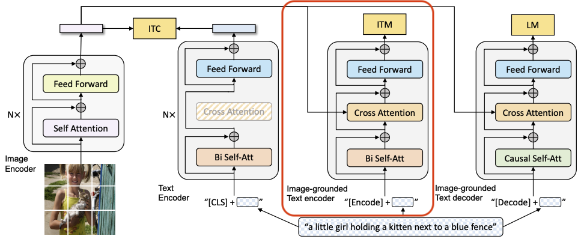
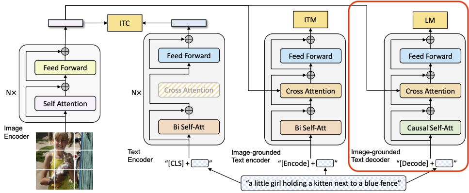
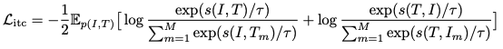
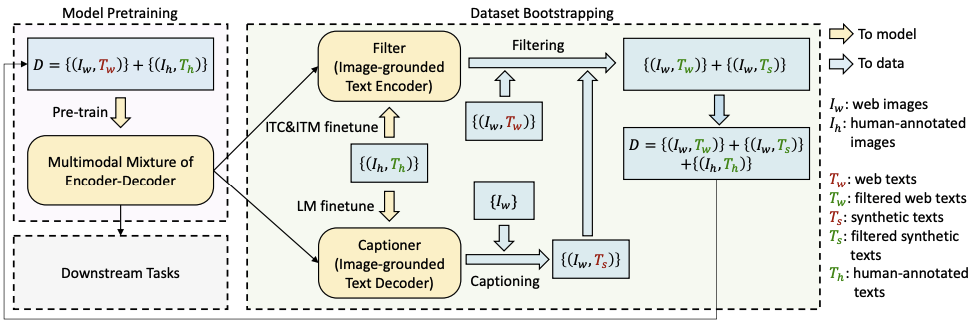

BLIP: Bootstrapping Language-Image Pre-training for Unified Vision-Language Understanding and Generation
Abstract
Vision-Language Pre-training (VLP) has advanced the performance for many vision-language tasks.
However, most existing pre-trained models only excel in either understanding-based tasks or generation-based tasks.
Furthermore, performace improvement has been largely achieved by scaling up the dataset with noisy image-text pairs collected from the web.
BLIP effectively utilizes the noisy web data by bootstrapping the captions, where a captioner generates synthetic captions and a filter removes the noisy ones (called CapFilt).
Also, denmonstrates strong generalization ability when directly transferred to video-language tasks in a zero-shot manner.
Introduction
~~
Method
This section first introduces our new model architecture MED and its pre-training objectives, and then delineates CapFilt for dataset bootstrapping.
3.1 Model Architecture
We employ a visual transformer (ViT) as our image encoder, which devides an input image into patches and encodes them as a sequence of embeddings, with an additional [CLS] token to represent the global image feature.
-> [CLS] token is used as a token to indicate the start of a sentence.
In order to pre-train a unified model with both understanding and generation capabilities, we propose multi-model mixture of encoder-decoder (MED), a multi-task model which can operate in one of the three functionalities.
Unimodal encoder, which separately encodes image and text
The text encoder is the same as BERT, where a [CLS] token is appended to the beginning of the text input to summarize the sentence.
Image-grounded text encoder
This injects visual information by inserting one additional cross-attention (CA) layer between the self-attention (SA) layer and the feed forward network (FFN) for each transformer block of the text encoder.
A task-specific [Encode] token is appended to the text, and the output embedding of [Encode] is used as the multimodal representation of the image-text pair.
Image-grounded text decoder
This replaces the bi-directional self-attention (Bi Self-Att block, in the image-grounded text encoder) with casual self-attention layers.
A [Decode] token is used to signal the beginning of a sequence, and an end-of-sequence token is used to signal its end.
3.2 Pre-training Objectives
We jointly optimize three objectives during pre-training, with two understanding-based objectives and one generation-based objecttive.
Each image-text pair only requires one forward pass through the computational-heavier visual transformer, and three forward passes through the text transformer, where different functionalities are activated to compute the three losses as delineated below.
Image-Text Contrastive Loss (ITC)
This activates the unimodal encoder.
It aims to align the feature space of the visual transformer and the text transformer by encouraging positive image-text pairs to have similar representations in contrast to the negative pairs.
-> Contrastive learning is a good way to think of it.

We follow the ITC loss by Align before fuse: Vision and language representation learning with momentum distillation
Image-Text Matching Loss (ITM)
This activates the image-grounded text encoder.
It aims to learn image-text multimodal representation the captures the fine-grained alignment between vision and language.
ITM is a bianry classification task, where the model uses an ITM head (a linear layer) to predict whether an image-text pair is positive (matched) or negative (unmatched) given their multimodal feature.
-> This is the loss of learning to predict whether the text and image are a good match after cross-attention with the text-embedding feauture and image embedding feature.
Language Modeling Loss (LM)
This is activates the image-grounded text decoder.
It aims to generate textual descriptions given an image.
It optimizes a cross entropy loss which trains the model to maximize the likelihood of the text in an autoregressive manner.
-> Similar to ITM, the features from the image encoder are received through cross attention, and Language Modeling Loss is used to train the decoder to generate captions for the image.
3.3 CapFilt

Due to the prohibitive annotation cost, there exist a limited number of high-quality human-annotated image-text pairs \({(I_h, T_h)}\).
Recent work utilizes a much larger number of image and alt-text pairs \({(I_w, T_w)}\) that are automatically collected from the web.
However, the alt-texts often do not accurately describe the visual content of the images, making them a noisy signal that is suboptimal for learning vision-language alignment.
We propose Captioning and Filtering (CapFilt), a new method to improve the quality of the text corpus.
Both the captioner and the filter are initialized from the same pre-trained MED model, and finetuned individually on the COCO dataset.
Specifically, the captioner is an image-grounded text decoder.
It is finetuned with the LM objective to decode texts given images.
Given the web images \({I_w}\), the captioner generates synthetic captions \({T_s}\) with one caption per image.
The filter is an image-grounded text encoder.
It is finetuned with the ITC and ITM objectives to learn whether a text matches an image.
The filter removes noisy texts in both the original web texts \({T_w}\) and the synthetic texts \({T_s}\), where a text is considered to be noisy if the ITM head predicts it as unmatched to the image.
Finally, we combine the filtered image-text pairs with the human-annotated pairs to form a new dataset, which we use to pre-train a new model.
Captioner (Image-grounded Text Encoder)
Given the human-labeled \({(I_h, T_h)}\) dataset and trained with LM loss, Captioner generates text for images collected from the web.
Filter (Image-grounded Text Encoder)
A dataset of \({(I_h, T_h)}\) pairs labeled by humans and a filter trained on ITC and ITM loss is used to filter the {Image, Text} pairs collected from the web \({T_w}\) and those generated \({T_s}\) by Captioner.
In this case, it serves to refine data that may be noisy by removing cases where {Image, Text} pairs are incorrectly paired.
Experiments and Discussions
~~
Reference
Align before fuse: Vision and language representation learning with momentum distillation